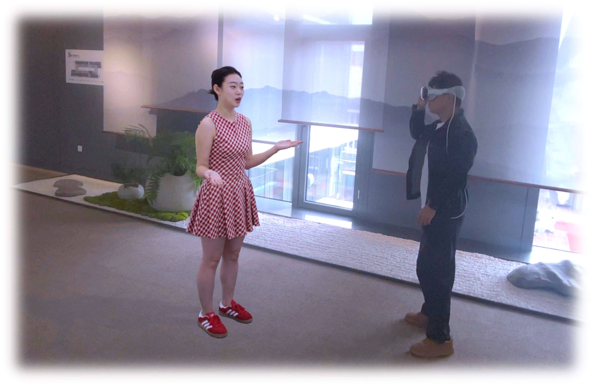
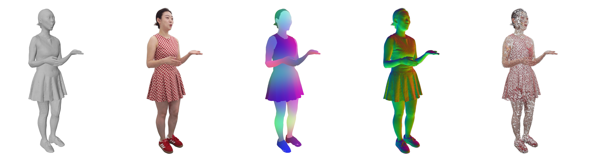
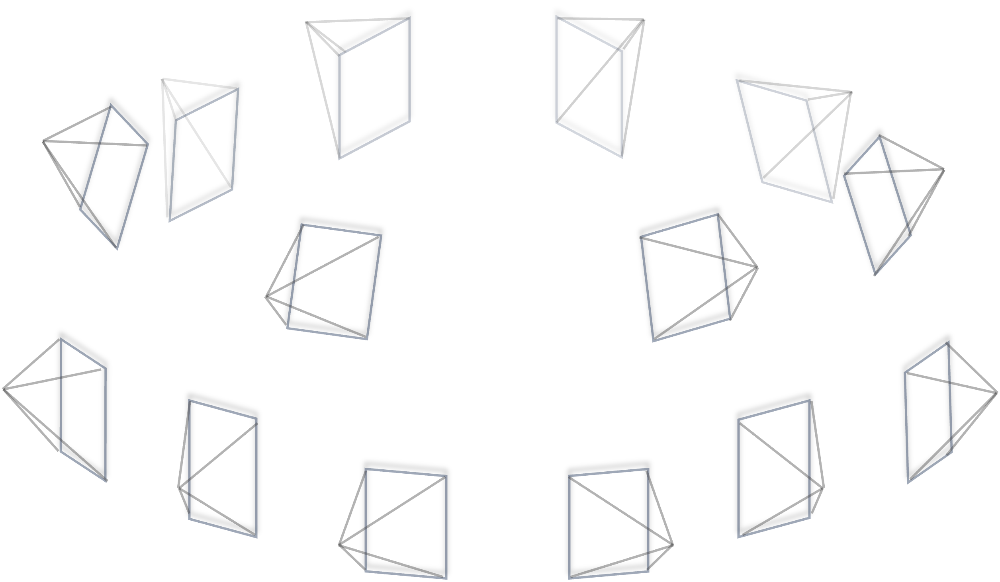
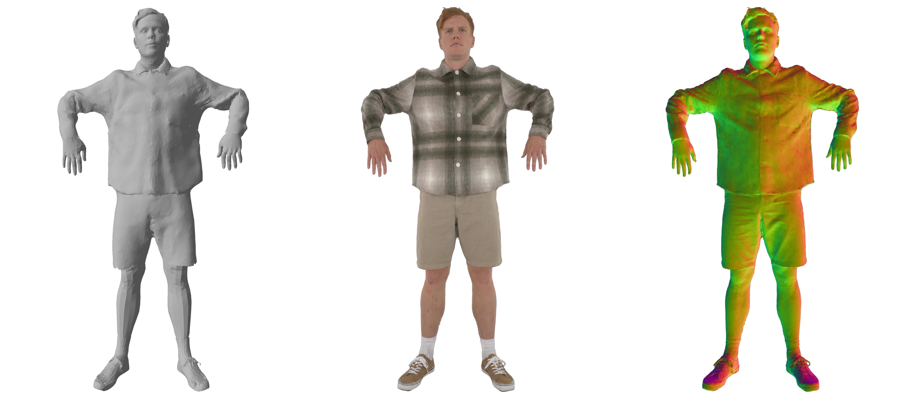
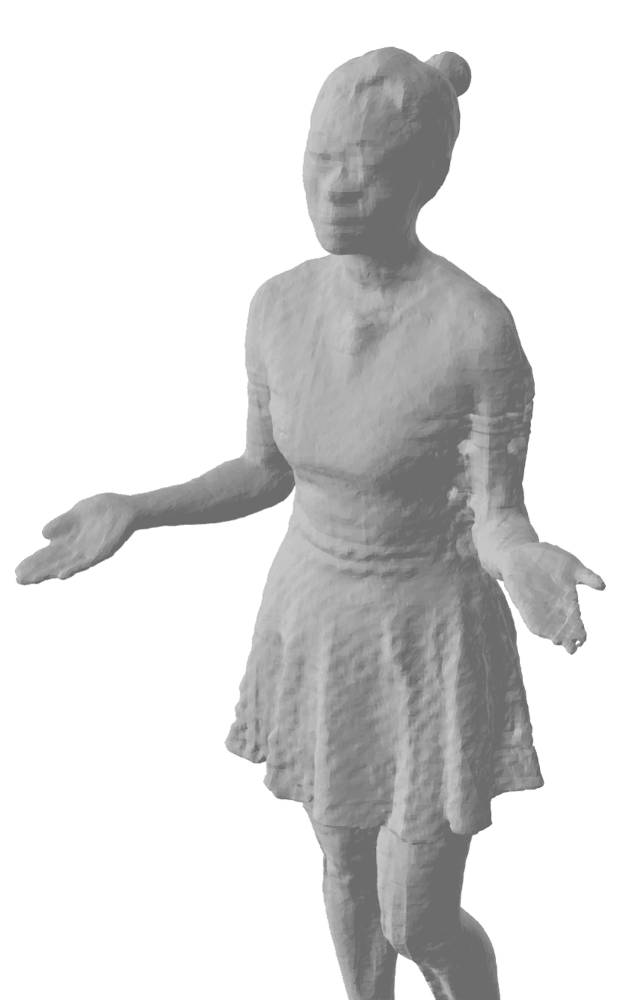

TaoAvatar: Real-Time Lifelike Full-Body Talking Avatars for Augmented Reality via 3D Gaussian Splatting
论文 ID: 225
arXiv: 2503.17032v2
机构: 阿里巴巴集团
发布时间: 2025 年 3 月（修订版 2025 年 7 月）
1. 核心问题
1.1 研究目的
创建逼真的 3D 全身说话数字人，能够在移动设备和 AR 眼镜（如 Apple Vision Pro）上实时运行。
1.2 现有方法及局限
现有方法存在以下问题：
| 方法类型 | 代表工作 | 局限性 |
|---|---|---|
| 参数化模型 | SMPL/SMPLX | 无法处理宽松衣物、复杂几何形状和高频细节（如飘动的裙子、细发丝） |
| NeRF 方法 | 各类神经辐射场 | 体积渲染速度慢，难以实时运行 |
| 3DGS 方法 | GaussianAvatar 等 | 面部表情和身体动作的细粒度控制不足，细节不够，无法在移动设备实时运行 |
1.3 本文方法
提出 TaoAvatar——一个基于 3D Gaussian Splatting (3DGS) 的高保真、轻量化全身说话数字人框架。
核心创新：
- 构建个性化的穿衣参数化模板 SMPLX++，将高斯点绑定到网格上作为纹理
- 提出教师 - 学生框架，用 StyleUnet 作为教师网络学习复杂的姿态相关非刚性变形
- 通过知识蒸馏将非刚性变形"烘焙"到轻量级 MLP 学生网络
- 设计**两个轻量化混合形状（blend shapes）**补偿细节
1.4 效果

- 在 Apple Vision Pro 上实现 2K 分辨率、90 FPS 立体渲染
- 渲染质量超越现有最先进方法
- 支持面部表情、手势、身体姿态驱动
2. 核心贡献
-
TaoAvatar 框架：新颖的教师 - 学生框架，创建拓扑一致、几何对齐的高保真轻量化 3DGS 全身说话数字人
-
非刚性变形烘焙策略：
- 提出非刚性变形烘焙技术
- 设计两个轻量化混合形状补偿
- 实现移动端高效高性能渲染
-
TalkBody4D 数据集：
- 多视角全身说话数据集
- 包含丰富的面部表情、手势和同步音频
- 即将开源
3. 背景知识
在深入方法之前，先了解几个关键概念：
3.1 SMPLX 参数化人体模型
SMPLX 是一个广泛使用的人体参数模型，包含：
- 身体姿态参数 \( \theta \)：控制关节旋转
- 形状参数 \( \beta \)：控制人体型
- 表情参数 \( \psi \)：控制面部表情
- 手部姿态参数：控制手指动作
优点：通用性强，可直接驱动动画
缺点：只能表示裸体，无法处理衣物、头发等
3.2 3D Gaussian Splatting (3DGS)
3DGS 是一种显式点基表示方法，用 3D 高斯分布表示场景：
每个高斯点包含属性：
- 位置 \( \mathbf{u} \)
- 旋转 \( \mathbf{r} \)
- 缩放 \( \mathbf{s} \)
- 不透明度 \( o \)
- 球谐系数 \( sh \)（表示视角相关颜色）
优点：
- 实时渲染（>100 FPS）
- 高质量渲染
- 可处理复杂材质（头发、半透明等）
3.3 线性混合蒙皮（LBS）
LBS 是计算机图形学中驱动角色动画的标准技术：
$$ \mathbf{v}' = \sum_{i=1}^{N} w_i \cdot (\mathbf{R}_i \mathbf{v} + \mathbf{t}_i) $$
其中：
- \( \mathbf{v} \) 是顶点在标准姿态下的位置
- \( w_i \) 是第 \( i \) 个关节的权重
- \( \mathbf{R}_i, \mathbf{t}_i \) 是第 \( i \) 个关节的旋转和平移
核心思想：用骨骼驱动网格变形
3.4 非刚性变形
LBS 只能处理刚性变换（旋转 + 平移），但真实人体和衣物还有非刚性变形：
- 肌肉伸缩
- 衣物褶皱和摆动
- 头发飘动
这些无法用骨骼直接驱动，需要额外建模。
4. 方法详解
4.1 整体框架
TaoAvatar 的整体流程如下图所示：

graph TD
subgraph 模板重建
A[多视角视频] --> B[NeuS2 重建几何]
B --> C[分割非身体部件]
C --> D[自动蒙皮]
D --> E[SMPLX++ 模板]
end
subgraph 教师网络训练
F[SMPLX++] --> G[绑定高斯点]
G --> H[StyleUnet 教师网络]
H --> I[非刚性变形图]
end
subgraph 学生网络蒸馏
I --> J[烘焙到 MLP]
J --> K[轻量学生网络]
K --> L[混合形状补偿]
L --> M[实时渲染]
end
4.2 混合穿衣参数表示（SMPLX++）
4.2.1 问题

原始 SMPLX 只能表示裸体，无法处理：
- 宽松衣物（裙子、外套）
- 头发
- 鞋子
- 配饰
4.2.2 解决方案
创建 SMPLX++——扩展的穿衣参数模型：
步骤：
- 选择接近 T-pose 的帧作为参考帧（可见细节多，几何不粘连）
- 使用 NeuS2 从多视角图像重建完整几何
- 用 4D-Dress 方法分割出非身体部件（衣服、头发、鞋子）
- 估计 SMPLX 形状和姿态
- 使用 Robust Skinning Transfer 自动为非身体部件生成蒙皮权重
- 通过逆向蒙皮变换回标准 T-pose
- 组合裸体 SMPLX 和非身体部件 = SMPLX++
结果：
- 约 22k 顶点，45k 面片
- 其中 23k 面片用于衣物、头发、鞋子
- 保留 SMPLX 原生面部表情和手部控制能力
4.3 网格绑定高斯点作为纹理
4.3.1 核心思想
将 3D 高斯点绑定到三角形面片上，作为"纹理"随网格同步运动。
4.3.2 高斯点局部属性
对于每个三角形面片 \( F_f(v_1, v_2, v_3) \)，随机初始化 \( k \) 个高斯点，每个高斯点维护局部坐标系下的属性：
$$ {f, (u, v), \gamma, \mathbf{r}, \mathbf{s}, o, sh} $$
- \( f \)：父三角形索引
- \( (u, v) \)：重心坐标
- \( \gamma \)：沿法线方向的平移
- \( \mathbf{r} \)：局部空间旋转
- \( \mathbf{s} \)：局部空间缩放
- \( o \)：不透明度
- \( sh \)：球谐系数
4.3.3 从局部到世界坐标变换
构建基于父三角形的变换矩阵：
$$ \mathbf{p} = u \cdot \mathbf{v}_1 + v \cdot \mathbf{v}_2 + (1 - u - v) \cdot \mathbf{v}_3 $$
$$ \mathbf{R} = [\mathbf{n}, \mathbf{q}, \mathbf{n} \times \mathbf{q}], \quad \mathbf{q} = \frac{(\mathbf{v}_2 + \mathbf{v}_3)/2 - \mathbf{v}_1}{|(\mathbf{v}_2 + \mathbf{v}_3)/2 - \mathbf{v}_1|} $$
$$ e = (|\mathbf{v}_1 - \mathbf{v}_2| + |\mathbf{v}_2 - \mathbf{v}_3| + |\mathbf{v}_1 - \mathbf{v}_3|) / 3 $$
世界坐标下的属性：
$$ \begin{aligned} \mathbf{u}_w &= \mathbf{p} + \gamma \mathbf{R} \mathbf{n} \ \mathbf{r}_w &= \mathbf{R} \mathbf{r} \ \mathbf{s}_w &= e \cdot \mathbf{s} \ \mathbf{c}_w &= \text{SH}(sh, \mathbf{R}^{-1}\mathbf{d}) \end{aligned} $$
关键优势：高斯点可以随网格正向蒙皮直接驱动，无需逆向映射
4.4 动态非刚性变形学习
4.4.1 挑战

线性混合蒙皮（LBS）不足以处理：
- 衣物褶皱
- 裙子摆动
- 头发飘动
需要学习姿态相关的动态非刚性变形。
4.4.2 教师网络：StyleUnet
使用大型 StyleUnet 作为教师网络，在 2D 纹理空间学习高斯点的非刚性变形：
输入：
- 前视和后视位置图 \( P_f, P_b \)（通过光栅化 T-pose 网格获得）
- 视角方向
输出：
- 非刚性变形图 \( \Delta U_f, \Delta U_b \)
- 其他高斯属性残差图
训练损失：
$$ \mathcal{L}{rec} = \mathcal{L}1 + \lambda{ssim}\mathcal{L}{ssim} + \lambda_{lpips}\mathcal{L}{lpips} + \lambda{nor}\mathcal{L}_{nor} $$
其中法线损失：
$$ \mathcal{L}_{nor} = |\mathbf{N}_t - \mathbf{N}_g| $$
- \( \mathbf{N}_t \)：教师网络渲染的法线图
- \( \mathbf{N}_g \)：从 NeuS2 获得的真实法线图
超参数：
- \( \lambda_{ssim} = 0.2 \)
- \( \lambda_{lpips} = 0.01 \)
- \( \lambda_{nor} = 0.02 \)
4.4.3 学生网络：轻量 MLP
教师网络虽然强大，但参数量大，无法在移动端实时运行。因此需要蒸馏到学生网络。
学生网络结构：
- 5 层 MLP
- 输入：标准姿态顶点坐标 \( \bar{\mathbf{v}}_i \)、姿态参数 \( \theta \)、每帧可学习嵌入 \( z_t \)
- 输出：非刚性变形 \( \Delta \bar{\mathbf{v}}_i \)
$$ \Delta \bar{\mathbf{v}}_i = \mathcal{S}(\bar{\mathbf{v}}_i, \theta, z_t) $$
可学习嵌入 \( z_t \) 的作用：
- 补偿不准确的姿态估计
- 捕获 LBS 无法建模的动态变化（衣物惯性、肌肉变形等）
4.4.4 烘焙过程
蒸馏损失：
$$ \mathcal{L}{bak} = \mathcal{L}{rec} + \lambda_{non}\mathcal{L}{non} + \lambda{sem}\mathcal{L}_{sem} $$
非刚性损失：
$$ \mathcal{L}_{non} = |\Delta V_f - \Delta U_f| + |\Delta V_b - \Delta U_b| $$
将学生网络的变形图与教师网络对齐。
语义损失（防止衣物与身体穿透）：
$$ \mathcal{L}_{sem} = |E_s - E_t| $$
为每个顶点分配语义标签：
$$ e_i = c_i + \sin(\tau \bar{\mathbf{v}}_i) $$
- \( c_i \)：分割颜色（如衣服红色、头发黄色）
- \( \tau \)：缩放因子（增加位置变化频率）
超参数：
- \( \lambda_{non} = 0.1 \)
- \( \lambda_{sem} = 1.0 \)
4.5 混合形状补偿
受 SMPL 姿态矫正混合形状启发，为每个高斯点设计可学习的混合形状：
4.5.1 位置混合形状 \( \mathbf{U} \in \mathbb{R}^{3 \times n} \)
补偿不同姿态下的高斯位置调整：
- 头发飘动
- 衣物褶皱
4.5.2 颜色混合形状 \( \mathbf{C} \in \mathbb{R}^{3 \times n} \)
补偿外观变化：
- 自遮挡产生的阴影变化
4.5.3 驱动系数
使用两个映射网络：
- 头部网络 \( \mathcal{H} \)：输入表情参数 \( \epsilon \)，输出系数 \( z_h \in \mathbb{R}^{n_h} \)
- 身体网络 \( \mathcal{B} \)：输入身体姿态 \( \theta \)，输出系数 \( z_b \in \mathbb{R}^{n_b} \)
补偿计算：
$$ \begin{aligned} \delta \mathbf{u} &= \text{BS}(z_h \oplus z_b; \mathbf{U}) \ \delta \mathbf{c} &= \text{BS}(z_h \oplus z_b; \mathbf{C}) \end{aligned} $$
最终属性：
$$ \begin{aligned} \mathbf{u}_w &= \mathbf{p} + \mathbf{R}(\gamma \mathbf{n} + \delta \mathbf{u}) \ \mathbf{c}_w &= \text{SH}(\mathbf{R}^{-1}\mathbf{d} + \delta \mathbf{c}) \end{aligned} $$
超参数：
- \( n = 28 \)（总混合形状数量）
- \( n_h = 8 \)（头部）
- \( n_b = 20 \)（身体）
4.6 网络架构对比
graph TB
subgraph 教师网络
T1[位置图] --> T2[StyleUnet]
T2 --> T3[非刚性变形图]
T3 --> T4[高质量渲染]
end
subgraph 学生网络
S1[顶点 + 姿态] --> S2[5 层 MLP]
S2 --> S3[烘焙变形]
S3 --> S4[混合形状补偿]
S4 --> S5[实时渲染]
end
T4 -.->|蒸馏 | S3
5. 训练与实现细节
5.1 数据集：TalkBody4D
数据规模：
- 4 个不同身份，每人穿 2 套不同服装
- 每个说话序列约 6k 帧，4K 分辨率
- 60 个视角：48 个全身视角 + 12 个面部特写视角
补充数据：
- 从 ActorHQ 数据集选择 4 个序列（04, 05, 06, 08）
- 2 个舞蹈序列
- 2 个夸张表情序列
训练/测试图像分辨率：1500 × 2000
5.2 训练流程
flowchart TD
A[参考帧多视角图像] -->|10k 迭代 | B[优化高斯点]
B --> C[预训练教师网络 600k 迭代]
C --> D[烘焙到学生网络 30k 迭代]
D --> E[微调 100k 迭代]
E --> F[最终模型]
5.3 优化策略
| 阶段 | 优化对象 | 迭代次数 | 批次大小 |
|---|---|---|---|
| 高斯初始化 | 高斯点属性 | 10k | - |
| 教师预训练 | StyleUnet | 600k | 1 |
| 烘焙 | 学生 MLP | 30k | - |
| 微调 | 映射网络 + 混合形状 | 100k | 4 |
5.4 部署优化
为了在移动设备实时运行，采用以下优化：
- FP16 量化：MLP 使用半精度
- UInt16 量化：高斯点排序
- 异步推理：
- 动画系统 20 FPS（训练数据捕获帧率）
- 渲染系统插值到 90 FPS（Apple Vision Pro 最大刷新率）
6. 实验与结论
6.1 对比方法
与以下最先进方法比较：
- GaussianAvatar：基于 2D CNN 的非刚性变形
- 3DGS-Avatar：MLP 学习非刚性变形
- MeshAvatar：纯网格表示
- AnimatableGS：从头学习隐式模板
6.2 全身说话任务定量对比
| 方法 | PSNR↑ | SSIM↑ | LPIPS↓ | FPS |
|---|---|---|---|---|
| GaussianAvatar | 26.58 (23.57) | .9313 (.8159) | .10577 (.25242) | 54 |
| 3DGS-Avatar | 28.91 (23.95) | .9411 (.8303) | .07984 (.20450) | 55 |
| MeshAvatar | 28.53 (24.55) | .9360 (.8083) | .09470 (.25572) | 22 |
| AnimatableGS | 32.50 (26.42) | .9599 (.8587) | .06695 (.19535) | 16 |
| Ours (Teacher) | 33.45 (27.01) | .9649 (.8741) | .04986 (.15613) | 16 |
| Ours (Student) | 33.81 (27.80) | .9689 (.8975) | .06437 (.14218) | 156 |
括号内为面部区域评估结果
关键发现：
- 学生网络质量超越教师网络（蒸馏效果）
- 速度提升近 10 倍（16 → 156 FPS）
- 面部区域提升尤为显著
6.3 复杂运动和表情重建

| 方法 | PSNR↑ | SSIM↑ | LPIPS↓ |
|---|---|---|---|
| GaussianAvatar | 25.94 (24.33) | .9294 (.8251) | .10478 (.24179) |
| 3DGS-Avatar | 30.04 (25.08) | .9403 (.8458) | .08471 (.18044) |
| MeshAvatar | 28.51 (24.94) | .9334 (.8100) | .08846 (.23517) |
| AnimatableGS | 31.81 (26.79) | .9493 (.8608) | .07586 (.19521) |
| Ours (Student) | 32.72 (27.35) | .9579 (.8836) | .07326 (.13914) |
6.4 消融实验

xychart-beta
title "消融实验：PSNR 对比"
x-axis ["w/ SMPLX", "w/o Mesh Non.", "w/o Gau Non.", "w/o Teacher", "Full"]
y-axis "PSNR" 28 --> 34
bar [28.47, 32.10, 31.16, 32.67, 33.29]
关键发现：
- 使用 SMPLX（无衣物扩展）效果最差（28.47）
- 网格非刚性变必不可少（去除后降至 32.10）
- 高斯非刚性补偿显著提升质量（31.16 vs 33.29）
- 教师蒸馏策略高效（32.67 vs 33.29）
6.5 定性对比

下图展示了各方法在全身说话任务上的视觉质量对比：
关键观察：
- 3DGS-Avatar：MLP 低频偏差导致模糊
- GaussianAvatar：受 SMPLX 拓扑限制，无法处理宽松裙子
- MeshAvatar：细节不足（头发、眼镜等）
- AnimatableGS：面部细节不足（眨眼、牙齿）
- TaoAvatar：清晰衣物动态 + 增强面部细节
6.6 驱动能力

TaoAvatar 支持多种驱动方式：
- 骨骼驱动：使用相同骨架参数驱动不同角色
- 表情参数驱动：来自 UniTalker 的音频生成面部表情
- 混合驱动：身体动作库 + 音频驱动面部
7. 应用
7.1 3D 数字人智能体管道
在 Apple Vision Pro 上部署的完整系统：
flowchart LR
A[用户语音] --> B[ASR: Paraformer]
B --> C[LLM: Qwen2.5-3B]
C --> D[响应文本]
D --> E[TTS: Bert-vits2]
E --> F[音频]
F --> G[Audio2BS: UniTalker]
G --> H[面部 BS 系数]
I[动作库] --> J[身体动作]
H & J --> K[TaoAvatar 渲染]
K --> L[立体显示]
所有模型本地运行，无需云端
7.2 跨平台部署
使用 MNN 推理引擎，可部署到：
- Apple Vision Pro（立体 2000×1800@90FPS）
- MacBook（3024×1964@90FPS）
- Android 设备（1080×2400@60FPS）
8. 局限性
-
极端姿态下的衣物建模：
- 训练数据分布外的夸张动作
- 宽松衣物（大裙摆）变形不足
- 可能解决方案：集成 GNN 模拟器
-
SMPLX 参数精度依赖：
- 姿态估计不准确时产生伪影
- 需要高质量动作捕捉
-
教师网络能力限制：
- 复杂运动（舞蹈引起的裙子摆动）建模困难
- 学生网络继承教师缺陷
9. 启发
9.1 技术启发
-
教师 - 学生蒸馏：将强大但缓慢的模型蒸馏到轻量模型
- 教师负责学习复杂模式
- 学生直接学习教师的输出
- 实现质量和速度的平衡
-
混合表示优势：
- 网格提供拓扑和刚性驱动
- 高斯点提供细节和材质
- 两者结合兼具优点
-
分阶段训练：
- 先训练强大的教师
- 再蒸馏到学生
- 最后微调补偿
- 比直接训练小网络更高效
9.2 应用启发
-
AR/VR 实时数字人：
- 电商直播带货
- 全息通讯
- 虚拟助手
-
端侧部署：
- 保护隐私（数据不离设备）
- 低延迟
- 离线可用
10. 遗留问题
-
更复杂的衣物模拟：
- 如何集成物理模拟器处理大变形衣物？
- 如何保持实时性能？
-
多人交互：
- 当前方法针对单人
- 如何扩展到多人场景？
-
长期一致性：
- 长时间运行时如何保持稳定性？
- 如何处理衣物状态变化（如脱下外套）？
-
更细粒度控制：
- 手指精细动作
- 衣物材质编辑
- 动态发型变化
11. 重要图表
11.1 方法总览图
论文 Figure 2 展示了完整的 TaoAvatar 方法流程：
┌─────────────────────────────────────────────────────────────┐
│ TaoAvatar 方法总览 │
├─────────────────────────────────────────────────────────────┤
│ (a) 模板重建：多视角 → NeuS2 → 分割 → SMPLX++ │
│ │
│ (b) 教师分支：StyleUnet → 非刚性变形图 → 高质量渲染 │
│ │
│ (c) 学生分支：MLP + 混合形状 → 烘焙 → 实时渲染 │
└─────────────────────────────────────────────────────────────┘
11.2 定量对比表
关键指标对比（全身说话任务）：
| 方法 | 整体 PSNR | 面部 PSNR | 整体 LPIPS | 面部 LPIPS | FPS |
|---|---|---|---|---|---|
| 最佳基线 | 32.50 | 26.42 | .06695 | .19535 | 16 |
| TaoAvatar | 33.81 | 27.80 | .06437 | .14218 | 156 |
11.3 消融实验结果
| 配置 | PSNR↑ | SSIM↑ | LPIPS↓ | P2S↓ | Chamfer↓ |
|---|---|---|---|---|---|
| w/ SMPLX | 28.47 | .9476 | .07899 | .7690 | .9995 |
| w/o Mesh Non. | 32.10 | .9734 | .03814 | .4877 | .5007 |
| w/o Gau Non. | 31.16 | .9686 | .03932 | .2968 | .3068 |
| w/o Teacher | 32.67 | .9751 | .03769 | .5236 | .5359 |
| Full | 33.29 | .9772 | .03464 | .2953 | .3052 |
12. 总结
TaoAvatar 提出了一个轻量化、高保真全身说话数字人解决方案，主要贡献：
- SMPLX++ 模板：扩展 SMPLX 处理衣物、头发、鞋子
- 混合表示：网格 + 高斯点结合
- 教师 - 学生蒸馏：高质量非刚性变形学习 + 实时推理
- 混合形状补偿：位置和颜色细节补偿
- TalkBody4D 数据集：全身说话场景多视角数据
效果：
- 渲染质量 SOTA
- 实时性能（156 FPS on RTX4090, 90 FPS on Vision Pro）
- 跨平台部署能力
参考文献
@article{chen2025taoavatar,
title={TaoAvatar: Real-Time Lifelike Full-Body Talking Avatars for Augmented Reality via 3D Gaussian Splatting},
author={Chen, Jianchuan and Hu, Jingchuan and Wang, Gaige and Jiang, Zhonghua and Zhou, Tiansong and Chen, Zhiwen and Lv, Chengfei},
journal={arXiv preprint arXiv:2503.17032},
year={2025}
}